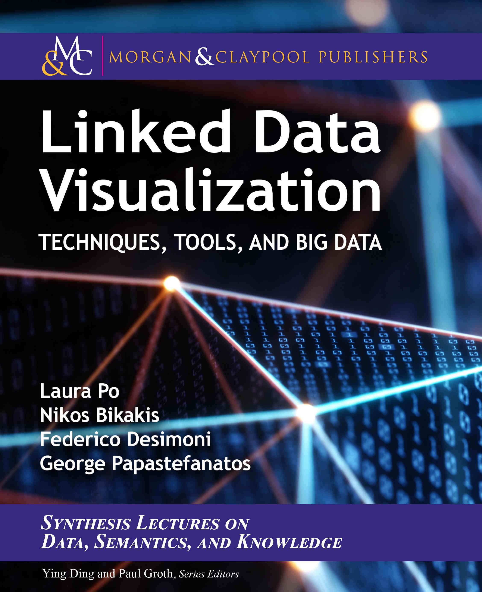
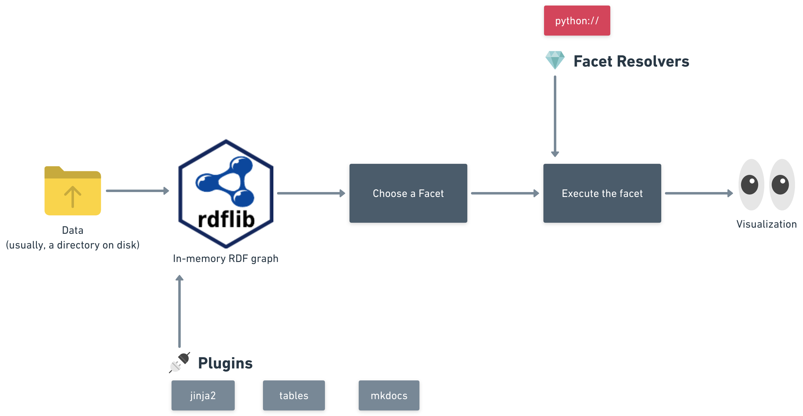

Iolanta: Linked Data authoring and ontology-based visualization system
Linked Data ⋅ JSON-LD ⋅ YAML-LD ⋅ Data Visualization
Abstract
Purpose: Linked Data in its raw form, as a collection of triples (or quads) — is arguably not easily comprehensible for a human being. Linked Data visualization is a conversion from triples to something more visual (table, chart, …) — something that we humans can easily read, understand, and interact with. The method and particular details of a visual rendering very much depend on the purpose for which data is visualized.
Methodology: A minimalistic yet extendable vocabulary is proposed to guide visualization based on the data and to allow customization of the visualization via the knowledge graph itself. A plugin-based visualization software architecture implementing the vocabulary is proposed and its main algorithm is described. A software tool implementing the proposed principles is built and published as an open-source project. A few plugins for it (implementing a few visualization types and integrations) are also provided.
Findings: A significant portion of this paper has been built from Linked Data using the software being demonstrated, as well as documentation pages for the said software. It is suggested that the toolset facilitates productivity and aids the reuse of knowledge.
Value: Knowledge reuse and wider adoption of Linked Data as lingua franca among professionals from various fields promises to improve the quality of making decisions that humanity can afford, which should enhance our ability as a species to tackle the difficult issues we are facing. This work is an attempt to make a small step forward in this direction.
1 Introduction
A person who is:
- not a specialist in Linked Data per se,
- but is attempting to leverage Linked Data as a tool for their work or hobby,
— probably cannot be expected to dive deep into the depths of raw triples. Users would prefer to use tools capable of visualizing the raw triples, converting them into a form better suitable for the human eye.
That need is met with Linked Data visualization tools — software systems that present Linked Data as lists, tables, charts, maps, trees, graphs, or any other form1 of data visualization imaginable.

Over the last decades, significant efforts have been put into visualizing Linked Data. A comprehensive survey of methods and tools as of 2020 is available in the Linked Data Visualization book2, the authors of which list, evaluate, and compare a handful of available visualization systems.
As an illustration, we are reproducing Table 3.1 from the book here (in Figure 1), which lists several visualization tools, and shows which data types and visualization modes every tool supports. The table was slightly modified before reproduction:
- Tools that were not marked as Available in the original are excluded because, from a practical viewpoint of a working professional, they no longer exist;
- The Setting and Application Type columns are omitted, — since they say
GenericandWebrespectively in every row of the table; - The original table used single-character codes to denote data and visualization types (for instance,
Cstands for "chart"), — we create a separate column for each visualization type instead. When viewing this paper as HTML, please hover over an icon to see a tooltip explaining its meaning; - The Year column was omitted as it is not immediately informative to us.
| Data Types | Visualization Types | |||||||||||
|---|---|---|---|---|---|---|---|---|---|---|---|---|
| Rhizomer | ✔️ | ✔️ | ✔️ | ✔️ | ✔️ | ✔️ | ✔️ | ✔️ | ✔️ | |||
| LDVizWiz | ✔️ | ✔️ | ✔️ | ✔️ | ✔️ | ✔️ | ||||||
| SynopsViz | ✔️ | ✔️ | ✔️ | ✔️ | ✔️ | ✔️ | ✔️ | |||||
| VisWizard | ✔️ | ✔️ | ✔️ | ✔️ | ✔️ | ✔️ | ✔️ | |||||
| Balloon | ✔️ | ✔️ | ✔️ | ✔️ | ✔️ | |||||||
| LP-Vis | ✔️ | ✔️ | ✔️ | ✔️ | ✔️ | ✔️ | ✔️ | |||||
| YDS | ✔️ | ✔️ | ✔️ | ✔️ | ✔️ | ✔️ | ✔️ | ✔️ | ✔️ | ✔️ | ||
| LPVA | ✔️ | ✔️ | ✔️ | ✔️ | ✔️ | ✔️ | ✔️ | |||||
Figure 1.
Visualization tools support multiple visualizations2 (Table 3.1, page 54).
See data & table definition.
2 Shoemaker's son
Figure 1 describes only a subset of all visualization tools the book as a whole explores, and it is only one of multiple tables, charts, and timelines the book contains. Nonetheless, none of the data visualizations the book contains are built with any of the visualization tools, or, at least, no mention of such could be found.
The authors had put an immense effort into setting up, comparing, and analyzing Linked Data visualization software, but none of the tools they tried gave them an impression that it can aid them in the complex and tedious task of authoring a book, — a process solely focused on managing and distilling information, a kind of work that Linked Data should be most useful for.
3 Can we do better?
What kind of visualization system would aid a task like preparing the Linked Data Visualization book, or, say, the paper you are so kind and forthcoming to be reading right now?
Tables, one of which is rendered in Figure 1, probably constitute the most predominant method of visualizing data; let us formulate this as a criterion the target visualization system has to satisfy.
Criterion 1
The target visualization tool must be capable of generating tables.
The same chunk of data can be rendered differently for different purposes. Figure 2, uses the same data as Figure 1 but shows it a little bit differently.
| Year | Available? | Last update | Comment | |
|---|---|---|---|---|
| Rhizomer | 2006 | ✔️ | 2022-12-02 | |
| YDS | 2017 | ✔️ | 2018-03-01 | |
| Balloon | 2014 | 2014-06-30 | ||
| LDVizWiz | 2014 | ✔️ | Could not get this to work. After entering the dbpedia endpoint address, several green active buttons appear but none of those reacts. | |
| SynopsViz | 2014 | ❌ | The URL is no longer available. | |
| VisWizard | 2014 | ❌ | The URL is no longer available. | |
| LP-Vis | 2016 | ❌ | It proved difficult to find the location or information of this system. | |
| LPVA | 2017 |
Figure 2.
Figure 1 with availability information and notes.
See data & table definition.
In particular,
- The Last Update column shows the date of the last changes touching the software, observed as of Spring 2023;
- The Available column indicates the evaluation of the tools' availability as of Spring 2023;
- The Comment column offers some notes about how the first two were obtained.
This table is different from the previous one, it highlights different aspects of the data and shows different columns, which brings about another condition:
Criterion 2
Visualizations must be customizable: for instance, when building a table, we should be able to choose what columns to render, in what order, and how to sort and/or group the data.
The list of visualization formats listed as columns in Figure 1 is rather extensive but not exhaustive. There might be narrow-focused, domain-specific visualizations, such as a DNA strand rendering or a chemical formula graph. Other visualizations might be medium-specific, for instance, an interactive representation of a table intended for viewing in virtual reality.
We can't predict what kind of visualizations developers would want to build for our system, we should give them freedom to build whatever they want. A restricted, stripped-down language or notation for visualizations would undermine that purpose.
Criterion 3
Visualizations should be implementable in a Turing complete general-purpose programming language.
One singular visualization system can't encompass all imaginable possibilities. A plugin mechanism is necessary to support independent developers writing new exciting visualizations.
Criterion 4
The target visualization tool must be extendable via plugins implementing various data types and visualization types.
While the code that builds the visualization is written in an arbitrary programming language, the user should not be required to be proficient in that language. For instance, if a chart is drawn by a Python program, the user shouldn't have to change Python code to modify the chart colors. What if we use Linked Data itself to describe such variable parameters?
Indeed, that would open several appealing advantages. For instance,
- Visualizations become easy to share,
- Visualizations can be tied directly to the nodes they're visualizing,
- Any additional metadata can be attached to visualizations very easily.
Let's try to go down this path, formalizing it as the following statement.
Criterion 5
Linked Data visualizations should be themselves expressible as Linked Data.
Thus, the role of the visualization system is to consume both data and visualization tied to it and output the rendered result — in our case, an HTML table.
What kind of vocabulary could be used to describe visualizations in Linked Data, then?
4 Fresnel Vocabulary
Fresnel3, last updated in 2005, is a browser-independent vocabulary able to specify how to render an RDF model. Fresnel's two foundational concepts are:
- lenses, which might contain nested sublenses, — define which properties of an RDF resource to display, and how to order them,
- formats define how to render those properties using
- RDF-specific formatting attributes
- and hooks to CSS4.
Formats do not output a usable visualization though, they only produce an abstract tree of components known as Abstract Display Model which then can be converted to HTML, XML, PDF, or anything else, — given that a tool for such conversion exists.
The visualization process Fresnel uses is described in Figure 3.

(Drawn by hand ☹.)
Let us analyze, in Figure 4, how Fresnel fits our 6 visualization tool criteria.
| Criterion | Satisfies | Notes |
|---|---|---|
| The target visualization tool must be capable of generating tables. | ✔️ | Fresnel implies HTML generation, and HTML supports tables. |
| Visualizations must be customizable: for instance, when building a table, we should be able to choose what columns to render, in what order, and how to sort and/or group the data. | ✔️ | fresnel:showProperties |
| The visualization method appropriate for a particular node depends on the node itself, its properties, and the context (environment) the node is visualized within. The visualization system should be aware of this relationship and be able to select an appropriate visualization mode based on the data. | 🤔 | Fresnel Domain Properties |
| Visualizations should be implementable in a Turing complete general-purpose programming language. | Not applicable: not specified by Fresnel. | |
| The target visualization tool must be extendable via plugins implementing various data types and visualization types. | 🤔 | Depends on the browser |
| Linked Data visualizations should be themselves expressible as Linked Data. | ✔️ | Fresnel is an RDF-based visualization description vocabulary, it satisfies this criterion by definition |
Figure 4.
Fresnel & criteria.
4.1 fresnel:showProperties
fresnel:showProperties defines an RDF list of properties. Values of these properties will be included in the visualization (see Figure 5). For our table example, this might be leveraged to define the list of table columns and their order.
:foafPersonShortLens rdf:type fresnel:Lens ;
fresnel:classLensDomain foaf:Person ;
fresnel:showProperties ( foaf:name
foaf:mbox
foaf:homepage ) .
Figure 5. fresnel:showProperties example in Turtle5.
4.2 Fresnel Domain properties
Figure 6 lists the properties defined by Fresnel which help determine which lens and format to use for a particular node.
| Domain | Range | Notes | |
|---|---|---|---|
| fresnel:instanceLensDomain | fresnel:Lens | Fresnel Selector | Specify instances that can be viewed via this Lens |
| fresnel:classLensDomain | fresnel:Lens | Fresnel Selector | Specify classes instances of that can be viewed via this Lens |
| fresnel:propertyFormatDomain | fresnel:Format | rdf:Property | Specify the set of properties to which a format is applicable |
| fresnel:classFormatDomain | fresnel:Format | Fresnel Selector | Specify instances that can be formatted with this Format |
| fresnel:instanceFormatDomain | fresnel:Format | Fresnel Selector | Specify classes instances of that can be formatted with this Format |
| fresnel:sublens | fresnel:Lens | For a given property mentioned in the Lens definition, specify which lens to use to render that property and its value. |
Figure 6.
Fresnel Domain properties.
See data & table definition
Fresnel Selector can be one of:
- Instance URI,
- FSL (Fresnel Selector Language) expression as a string,
 SPARQL7 query as a string.
SPARQL7 query as a string.
4.3 Plugins
Several RDF visualization tools powered by Fresnel vocabulary have been developed, and a few of them are displayed in Figure 7.
| Available? | Last update | Language | Plugin support | |
|---|---|---|---|---|
| Longwell | ❌ | Java | ||
| Piggy Bank | ❌ | Java | ||
| Horus | ❌ | PHP | ||
| LENA | ❌ | |||
| IsaViz | ✔️ | 2007-10-21 | Java | ❌ |
| OAT OpenLink AJAX Toolkit (OpenLink Software) | ✔️ | 2012-10-23 | Javascript | ❌ |
| Marbles | ✔️ | 2013-01-13 | Java | ❌ |
Figure 7.
Fresnel-powered tools by their plugin support.
See data
& table definition.
The tools evaluated either are not available or do not show evidence of a plugin system.
5 Template-based visualization tools
5.1 TAL4RDF
TAL4RDF6, or T4R, is a special-purpose template language that serves two distinct goals:
- Generate textual content from RDF — primarily XML and HTML, since TAL4RDF, as its platform technology TAL, employs special attributes for XML tags;
- Traverse the RDF graph right from within the template.
Example TAL4RDF source is in Figure 8. Author says:
Compared to T4R, the strengths of Fresnel are also its weaknesses. Its model is quite complex and not practical for rapid prototyping of templates. Furthermore, the mapping from the abstract box model to concrete syntaxes being not specified in Fresnel, it is not a "ready to use" solution for application developers. In fact, we believe that T4R could be used to implement this missing step between Fresnel and concrete formats.
TAL4RDF does not implement the discovery of a particular template to use for a given RDF node. This is an extension of Fresnel or another visualization framework but not such a framework itself.
<ul tal:define="global t4rns:foaf string:http://xmlns.com/foaf/0.1/">
<li tal:repeat="pe foaf:knows">
<span tal:content="pe/id">someone I know</span> works on:
<ul>
<li tal:repeat="pr pe/foaf:currentProject">
<a tal:attributes="href pr/foaf:homepage" tal:content="pr/id">a project</a>
</li>
</ul>
<span tal:define="past pe/foaf:pastProject" tal:condition="past">
and also worked on <span tal:content="past/count">n</span> project(s) in the past.
</span>
</li>
</ul>
5.2 LESS
LESS8 is a Linked Data browser based on a template language inspired by Smarty9 PHP templates. An interactive template editor aids the user in crafting a template for their particular needs; then, the resulting template can be published on a LESS Repository online and then embedded into various third-party applications:
…a blogger writing about a recent trip to Berlin can easily integrate a nicely formatted fact box with important information about Berlin obtained from Wikipedia into her blog post. A community of science fiction fans can integrate lists on a recent BBC programming matching their preferences into their community portal.
With Smarty (or any other template language), template reuse seems to pose a challenge. schema:url property on an object will always mean that the object has a hypertext link associated with it. The author of every template out there will have to remember that, — there is no way to say that schema:url in HTML context is always rendered as an <a> tag. Which seems to be a reason for a lot of repetition among templates. Can we leverage the information already contained in the Linked Data to reduce that kind of repetition?
5.3 Summary
- Purely template-based tools do not allow to specify, via the Linked Data graph itself, which visualization to choose;
- Fresnel vocabulary permits that — but requires the creation of a large tree of lenses so that we can choose particular visualization for even the deepest levels of the tree.
6  Iolanta visualization system by example
Iolanta visualization system by example
This paper proposes an open-source visualization tool by the name of Iolanta. This tool is also used to build parts of this paper.
Reproducibility
The paper is published on the Web at  iolanta.tech.
iolanta.tech.
The source code can be found at iolanta-tech/iolanta-tech. The repository is equipped with a README.md file which explains how to clone the repository and run the site locally. Thus, this paper is fully reproducible.
Having cloned the repository and installed Iolanta, we can cd to the root directory for the repo, and run the following shell command:
The visualization method appropriate for a particular node depends on the node itself, its properties, and the context (environment) the node is visualized within. The visualization system should be aware of this relationship and be able to select an appropriate visualization mode based on the data.
We've already seen this text in 3 Can we do better? section and in Figure 4; copy-paste hasn't been involved.
The Iolanta rendering process is shown in Figure 9.

(drawn by hand ☹)
Let's describe each of these steps in more detail.
6.1 Loading data into graph
There is one central place, a text file shown in Figure 10, where the visualization system criteria are sourced from.
$id: Criterion
$reverse:
rdf:type:
- $id: criterion-context
number: 6
rdfs:label: "The visualization method appropriate for a particular node depends on the node itself, its properties, and the context (environment) the node is visualized within. The visualization system should be aware of this relationship and be able to select an appropriate visualization mode based on the data."
# ✂ ⋯⋯⋯⋯⋯⋯⋯⋯⋯
Figure 10.
Criteria code. See criteria.yaml
This file is written in YAML-LD, which is one of file formats Iolanta natively supports.
-
JSON-LD13
W3C standard to express Linked Data in JSON14 data language, which is the de facto lingua franca of modern web technology. It supports conversion from JSON to RDF10 and back.
Extensions:
.json.jsonld -
YAML-LD12
Draft (as of spring 2023) W3C Recommendation, which is actually a mapping of JSON-LD → YAML11 data format language. YAML maps to JSON, but is much easier to write manually, — that's why it is widely used to describe configuration files, settings, container and cloud architectures, etc.
Extensions:
.yaml.yamlld -
Markdown with YAML-LD12 frontmatter16
Markdown is a simple text format; YAML frontmatter is a piece of YAML located in the beginning of the file and surrounded by
---lines.Extension:
.md
The process of loading data is described in Figure 10.
Figure 10.
Workflow of loading data → Iolanta graph. See loading-into-graph.yaml
Loading files. Iolanta reads recursively each file of a supported format from the working directory, plus — files provided by installed plugins (we will touch on that again later).
Applying contexts. When reading the source files, Iolanta applies a default JSON-LD Context15, which implements two important mappings:
- Default vocabulary and base IRI is set to
local:IRI scheme. That's the scheme every QName is interpreted with. - Each
@-keyword of JSON-LD (except@contextwhich is not applicable) gains a synonym beginning with$instead. For instance,$idis an alias of@idJSON-LD keyword. As indicated in YAML-LD Specification,@character which defines JSON-LD keywords is a reserved character in YAML, which means using this character requires quoting, as shown in Figure 11.
"@id": criterion-context
Figure 11.
@id keyword must be quoted.
In addition, a context.json file in a directory is applied to all files underneath it.
Loading into the graph. Every file Iolanta consumes is converted into RDF and loaded into Iolanta Graph — in-memory, transient RDF dataset. Operations on the dataset, henceforth known as Iolanta Graph, are handled with rdflib17 Python library.
OWL RL. When each and every consumable file is consumed, OWL RL18 logical inference rules are applied to the graph so that RDFS19 and OWL20 constructs take effect.
From that point, the graph is essentially read only; during the next steps, it will be used as data source to build visualizations from.
6.2 Render as text
When iolanta command line application is invoked with criterion-context argument, how does it retrieve the corresponding criterion text as shown in Figure 10 to print it to the console?
To do that, the system will call iolanta.facets.cli.default.Default Python class, which will do the following:
- Via a SPARQL7 query, find out whether the node being rendered has an
rdfs:labelproperty; - If yes, print that property.
We call such classes facets. The word facet is defined by Cambridge Dictionary21 as:
one part of a subject, situation, etc. that has many parts
or
one of the parts or features of something.
Criterion 3
Visualizations should be implementable in a Turing complete general-purpose programming language.
In Iolanta terminology, Facet is a unit of executable program code used to visualize RDF nodes in an Environment. Facet can be described as a black box as displayed in Figure 11.
Figure 11.
Facet as a black box, its inputs and output. See facet-black-box.yaml
- RDF Node to visualize
-
Identifier of the node we want to render, such as
local:criterion-contexton the example above. - Environment
-
Identifier of a node that identifies that environment. The Environment might signify:
- Type of output (HTML, SVG, …),
- Parent within which we are serializing (table cell, graph node, point on a line chart, …).
- Iolanta instance
-
Contains SPARQL7 queryable RDF graph that the Facet can use to retrieve necessary information about the node and the environment.
- Facet
-
Current version of
iolantasupports only one kind of Facets: Python classes which are subclasses ofiolanta.Facetabstract base class. We do not store program code of the facets in the graph itself; that seems both inconvenient and insecure. Instead, in the graph facets are addressed via IRIs. For instance,python://iolanta.facets.generic.BoolLiteralis the facet that renders anxsd:booleanvalue as a Unicode icon. From this example, it is evident how we identify facets. These are import paths native for Python programming language, which we define bypython://protocol.
Not every facet suits every possible environment. For instance, if a facet returns a string that contains HTML code that result would be next to useless for a LaTeX document, and vice versa.
The same notion or piece of data might be visualized as a list, a table, or maybe an interactive 3D landscape, but none of those changes the nature of the object being represented. It might be said every representation of an object is another way of looking at it, a new angle, feature, a facet of the object. We want to support that kind of flexibility with Iolanta. To illustrate that, let's now try something different.
6.3 Visualize criterion in an admonition box
!!! question "Criterion 6"
The visualization method appropriate for a particular node depends on the node itself, its properties, and the context (environment) the node is visualized within. The visualization system should be aware of this relationship and be able to select an appropriate visualization mode based on the data.
We added the --as argument, and our output has changed. It is a piece of extended Markdown markup suitable for Mkdocs22 static site generator with mkdocs-material23 theme. Indeed, inside Mkdocs it is rendered like this:
Criterion 6
The visualization method appropriate for a particular node depends on the node itself, its properties, and the context (environment) the node is visualized within. The visualization system should be aware of this relationship and be able to select an appropriate visualization mode based on the data.
The facet responsible for it is iolanta_tech.facets.criterion.Criterion, and it has been chosen because we specified iolanta:html as the environment for rendering using the --as parameter.
This brings us to the question we silently ignored in the previous section: how is the particular facet for the given node selected?
Facet selection depends on the environment we are rendering a node within.
- In our first example, we didn't specify
--as, and Iolanta used its default environment —iolanta:cli— which serves printing to console; - In the second example, we specified
iolanta:htmlexplicitly.
7 Facet selection algorithm
Figure 12 illustrates the piece of YAML-LD code that helps Iolanta choose the correct facet. We can see that Criterion class has two facets connected to it via iolanta:hasInstanceFacet property.
Defaultfacet that's going to be used in table cells;Criterionfacet which will render Markdown markup.
$id: Criterion
iolanta:hasInstanceFacet:
- $id: python://iolanta_tech.facets.Criterion
iolanta:supports:
- $id: iolanta:html
- $id: local:satisfied
- $id: local:failed
- $id: python://iolanta.facets.html.Default
Figure 12.
Facet definitions for Criteria. See facets.yaml
iolanta:hasInstanceFacet
Facet assigned by node type.
- Domain:
rdfs:Class - Range:
iolanta:Facet - Inverse:
iolanta:isInstanceFacetOf
With iolanta:supports, we also define the environments given facet can operate in. Criterion facet rendering will look differently for the default iolanta:html environment versus special environments for failed and satisfied criteria.
iolanta:supports
Specify that facet can work in the specific environment.
- Domain:
iolanta:Facet - Range:
iolanta:Environment - Inverse:
iolanta:isSupportedBy
Generally, rendering of an object depends on the environment the object is rendered within. The easiest example would be HTML vs LaTeX output; for a more practical example, it might be considered how this paper renders the criteria for a visualization system differently depending on context:
- as plain text within a table cell at Figure 4,
- or a block (called an admonition) within the body of the article itself:
Criterion 6
The visualization method appropriate for a particular node depends on the node itself, its properties, and the context (environment) the node is visualized within. The visualization system should be aware of this relationship and be able to select an appropriate visualization mode based on the data.
Within Fresnel, this can be solved using fresnel:sublens property:
- The
Paperlens will specify thatCriterionobject has to be rendered withAdmonitionsub-lens, - while the
TableCelllens will render it usingLabelsub-lens.
This calls for a huge tree of lenses to define rendering of the whole paper — or the whole book. Is it really necessary?
Figure 14 describes the facet search algorithm Iolanta is implementing.
Figure 14. Iolanta facet search algorithm
See algorithm.yaml
Environment is an rdfs:Class defined by Iolanta base vocabulary.
iolanta:Environment
Data visualization might be performed in various contexts, which we call Environments. For instance:
iolanta:htmlcalls for HTML output;iolanta:cliis for rendering in the command line;iolanta:texis for LaTeX documents.
We will provide more examples for Environments later.
As we can see, iolanta:hasInstanceFacet is not the only relation from objects to facets Iolanta cares about. The top priority is iolanta:facet which links an individual node, instead of a class, directly to the facet that should be used to render that particular node.
iolanta:facet
Facet assigned by particular node. This property might be attached to any IRI or BNode in an RDF graph.
- Range:
iolanta:Facet - Inverse:
iolanta:isFacetOf
:something iolanta:facet <python://iolanta.facets.html.Default> .
In case iolanta:facet and iolanta:hasInstanceFacet weren't found for the node in question, we fall back to the default facet assigned to the Environment. That's how our first CLI example worked: Default facet is configured as:
iolanta:hasDefaultFacet
Define a default facet used for that environment.
- Domain:
iolanta:Environment - Range:
iolanta:Facet - Inverse:
iolanta:isDefaultFacetOf
iolanta operation is based on a simple vocabulary, bundled with the application and drawn, as a diagram, in Figure 15. Iolanta vocabulary defines a few classes and a few properties connecting classes to each other.
Prefix we use is iolanta:, and it resolves to https://iolanta.tech/.
iolanta: vocabulary (Drawn by hand ☹)The existence of Iolanta vocabulary closes the following criterion.
Criterion 5
Linked Data visualizations should be themselves expressible as Linked Data.
To conclude this section, — Iolanta facet search algorithm aims to satisfy one of the criteria we listed. Here it is:
Criterion 6
The visualization method appropriate for a particular node depends on the node itself, its properties, and the context (environment) the node is visualized within. The visualization system should be aware of this relationship and be able to select an appropriate visualization mode based on the data.
8 Integration: MkDocs
Printing visualizations in the console might be fun — but not too useful if we want to embed them into a book or in a paper, like this one.
For that purpose, we have mkdocs-iolanta26 plugin which integrates Iolanta with MkDocs22 static site generator. Syntax for embedding visualizations is provided by Jinja224 template engine and looks like this:
{{ render('criterion-context', environments=['satisfied']) }}
The output of this is an extension to Markdown markup known as Admonitions25.
9 Plugin: iolanta-tables
Iolanta supports plugins, which aims to satisfy the following criterion.
Criterion 4
The target visualization tool must be extendable via plugins implementing various data types and visualization types.
The Criteria 1-6 we used as an example of rendering are quite simple to work with; they feature no nested environments, for example.
iolanta-tables28 is an Iolanta plugin that implements more complex structures. We used it to render Figure 1 and Figure 4 from YAML-LD definitions.
It has its own vocabulary to define tables.
Figure 16 shows a piece of code describing the data.
$id: VisualizationTool
$reverse:
rdf:type:
- $id: rhizomer
available: yes
rdfs:label: Rhizomer
schema:url: https://github.com/rhizomik/rhizomerEye
last-update: 2022-12-02
year: 2006
numeric: yes
temporal: yes
spatial: yes
hierarchical: yes
graph: yes
chart: yes
map: yes
# ✂ ⋯⋯⋯⋯⋯⋯⋯⋯⋯
Figure 16. Visualization tools file. See various-visualizations.yaml in the Supplementary Material.
$id: table:Table
rdfs:comment: "Definition of a table."
iolanta:hasInstanceFacet:
- $id: python://iolanta_tables.facets.html.Table
iolanta:supports:
$id: iolanta:html
In the snippet in Figure 14, we introduced a new table:self column. That's not a property, say, rhizomer has; it means that we render the node itself (the rhizomer node) — and for that the Default facet we already know will be employed, — which will be presented as a clickable HTML link.
On the snippet at Figure 15, we define mkdocs-material:icon property to use mkdocs22 specific icon as column header.
Figure 1 is visualized from the description in Figure 17:
$id: tools-with-various-visualizations
table:columns:
- table:self
- rdfs:label: Data Types
table:columns:
- $id: numeric
mkdocs-material:icon: material/numeric.svg
rdfs:comment: "Numeric"
rdfs:label: " "
- $id: temporal
mkdocs-material:icon: material/timer-sand.svg
rdfs:comment: Temporal
rdfs:label: " "
- $id: spatial
# ✂ ⋯⋯⋯⋯⋯⋯⋯⋯⋯
Here, we use nested table:columns properties to group columns.
The following criterion is thus satisfied:
Criterion 1
The target visualization tool must be capable of generating tables.
Conclusions
We have presented the Iolanta visualization system and provided a few examples of how it works on real data. We also have shown how it integrates with other systems — for instance, to aid in building this paper.
We have shown a few plugins currently built for Iolanta.
Directions for future research might include:
- Implement more plugins for various use cases, such as:
- roadmaps & network planning,
- software architecture diagrams,
- and more;
- Implement more environments, such as:
- LaTeX,
- CLI;
- Integrate with remote datasets like DBPedia29;
- Integrate with IPFS;
- Provide interactive browsing experience.
-
USI eLab. A periodic table of visualization methods. ↩
-
Linked Data Visualization: Techniques, Tools and Big Data. — Laura Po, Nikos Bikakis, Federico Desimoni, and George Papastefanatos | Morgan & Claypool, 2020. ↩↩
-
Pietriga, E., Bizer, C., Karger, D., Lee, R. (2006). Fresnel: A Browser-Independent Presentation Vocabulary for RDF. In: , et al. The Semantic Web - ISWC 2006. ISWC 2006. Lecture Notes in Computer Science, vol 4273. Springer, Berlin, Heidelberg. https://doi.org/10.1007/11926078_12 ↩
-
Beckett, D., Berners-Lee, T., Prud’hommeaux, E., & Carothers, G. (2014). RDF 1.1 Turtle. World Wide Web Consortium, 18-31. ↩
-
Champin, P. A. (2009). Tal4Rdf: Lightweight Presentation for the Semantic Web. In SFSW@ ESWC. — https://ceur-ws.org/Vol-449/Paper1.pdf ↩
-
Prud’hommeaux, E., Seaborne, A.: SPARQL query language for RDF. W3C recommendation, W3C (2008) http://www.w3.org/TR/rdf-sparql-query/. ↩↩↩
-
Auer, Sören & Doehring, Raphael & Tramp, Sebastian. (2010). LESS - Template-Based Syndication and Presentation of Linked Data. 6089. 211-224. 10.1007/978-3-642-13489-0_15. ↩
-
Smarty templating engine. https://smarty.net ↩
-
RDF Working Group. (2014). Resource Description Framework (RDF). Semantic Web Standards. ↩
-
YAML Ain’t Markup Language (YAML™) version 1.2. Revision 1.2.2 (2021-10-01). https://yaml.org/spec/1.2.2 ↩
-
JSON-LD. https://json-ld.org ↩
-
JSON. https://json.org ↩
-
YAML Frontmatter. https://jekyllrb.com/docs/front-matter/ ↩
-
McBride, B. (2004). The resource description framework (RDF) and its vocabulary description language RDFS. Handbook on ontologies, 51-65. ↩
-
Motik, B., Patel-Schneider, P. F., Parsia, B., Bock, C., Fokoue, A., Haase, P., ... & Smith, M. (2009). OWL 2 web ontology language: Structural specification and functional-style syntax. W3C recommendation, 27(65), 159. ↩
-
Facet. Cambridge Dictionary. https://dictionary.cambridge.org/dictionary/english/facet ↩
-
MkDocs. mkdocs.org ↩↩↩
-
mkdocs-material. https://squidfunk.github.io/mkdocs-material/ ↩
-
Admonitions for
mkdocs-material. ↩ -
Iolanta Tables. https://iolanta.tech/tables ↩
-
Auer, S., Bizer, C., Kobilarov, G., Lehmann, J., Cyganiak, R., & Ives, Z. (2007). Dbpedia: A nucleus for a web of open data. In The Semantic Web: 6th International Semantic Web Conference, 2nd Asian Semantic Web Conference, ISWC 2007+ ASWC 2007, Busan, Korea, November 11-15, 2007. Proceedings (pp. 722-735). Springer Berlin Heidelberg. ↩